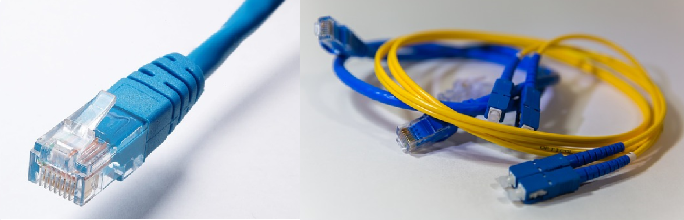
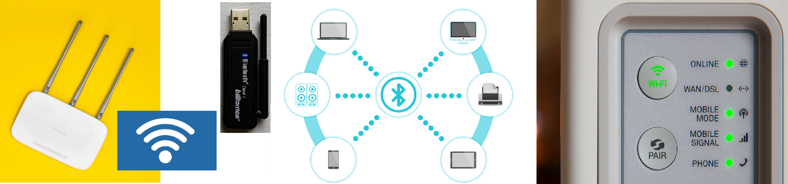
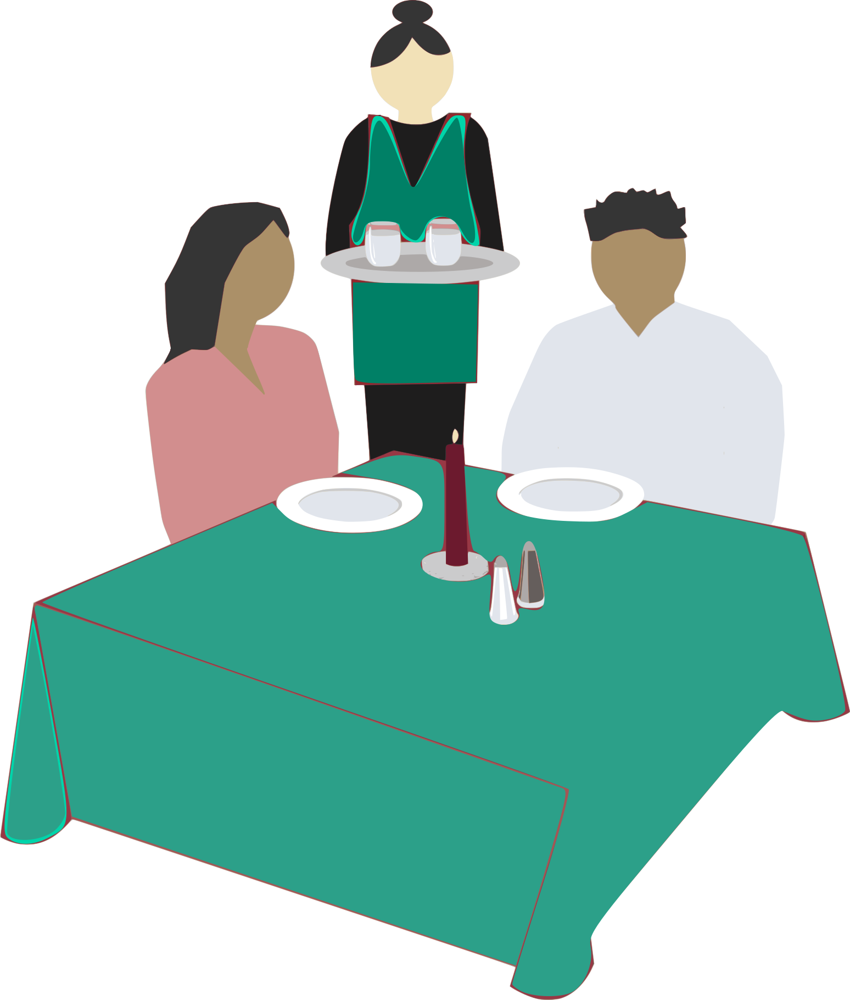

Рачунарске мреже и интернет¶
У претходној лекцији разматрали смо различите области људске делатности и њихову повезаност са развојем информационо-комуникационих технологија. Било да посматрамо трансформацију начина рачунања, записа и обраде текста, слика, звука, складиштење информација или њихову дистрибуцију, као и комуникацију између људи, у свакој од тих „паралелних” грана стижемо до исте тачке у којој се све ове функције обављају користећи једну врсту уређаја - рачунар. У овој лекцији, бавићемо се овом последњом у низу - улогом рачунара у дистрибуцији информација и директној комуникацији корисника.
Рачунарске мреже¶
Два или више рачунара повезаних тако да могу да размењују податке чине мрежу. Да би се остварила рачунарска комуникација потребни су: - комуникациони медијуми, - комуникациони уређаји и - комуникациони протоколи.
Нећемо улазити у техничке детаље, али потребно је да имате основна знања о функционисању интернета како бисте знали шта је неопходно да бисте имали интернет код куће или, ако сте изгубили везу шта могу да буду узроци и где потражити помоћ за решење проблема.
Пренос информација врши се путем комуникационих медијума - а они могу бити кабловски („ожичени”, енгл. wire) и бежични (енгл. wireless). Кабловски се данас углавном реализују путем у-те-пе („упредени парови жица”, енгл. UTP, unshielded twisted pair, ) каблова и путем оптичких каблова.
Слика: Етернет кабл са контекторoм RJ-45 и оптички кабл са конекторима
Знате ли разлику између ове две врсте каблова? Од ког материјала су први, а од ког други? Каква је природа сигнала кроз у-те-пе, а каква кроз оптичке? Ако се не сећате ових појмова из основне школе, покушајте да пронађете одговор на интернету…
Бежичне мреже данас се најчешће реализују путем вај-фај (енгл. WiFi) технологије, блутут (енгл. Bluetooth) технологије или као мреже за пренос података у системима мобилне телефоније.
Слика: различите бежичне технологије
Kомуникациони уређаји су: модем, мрежна картица, хаб (енгл. hub), свич (енгл. switch), рутер (енгл. rooter) за кабловске везе, а за бежичне везе то су: вај-фај адаптер, приступна тачка (енгл. access point), блутут адаптер, адаптер за мобилне мреже…

Слика: комуникациони уређаји
Сигурно се од раније сећаш појмова „хардвер” и „софтвер”. Наведени медијуми и уређаји чине хардвер неопходан за успостављање комуникације између рачунара. Знате да хардвер без софтвера не може да функционише. Стога су неопходни и комуникациони протоколи и комуникациони софтвер. Комуникациони протокол представља скуп правила за управљање преносом података, а данас је доминантан ти-си-пи/ај-пи (енгл. TCP/IP) скуп протокола. Комуникациони софтвер чине различити мрежни оперативни системи, апликације, драјвери… (Знаш ли шта означавају ове три групе софтвера? Ако се не сећаш, подсетићемо се у једној од лекција које следе.)
Мрежа може да заузима релативно мали географски простор - један стан, предузеће, зграду или више суседних зграда и то је локална мрежа (LAN - Local Area Network) или да заузима много шири простор - регионална рачунарска мрежа (WAN - Wide Aeria Network). То може да буде и мрежа неког оператера мобилне телефоније или кабловске ТВ/интернет услуге.
Глобална мрежа, која повезује локалне и регионалне мреже широм света је интернет.
Рачунаре унутар мреже називамо „чворовима” мреже. Мрежа може да се састоји од међусобно равноправних рачунара, и онда се каже да је то пир-ту-пир (енгл. peer–to–peer) мрежа.
Уколико у мрежи имамо рачунаре који своје ресурсе (уређаје, програме и податке) дају на располагање другим рачунарима, онда је то клијент-сервер мрежа. Чворови мреже који садрже програме који опслужују друге рачунаре називају се сервери. По својој функцији сервери могу бити: сервер за управљање мрежним ресурсима (domain controller), сервер датотека (file server), сервер базе података (database server), апликациони сервер (aplication server), интернет сервер (web server), сервер за штампу (print server), сервер резервних копија (backup server)… Kлијенти су рачунари који користе ресурсе мреже, односно услуге сервера у мрежи.
Лако ћеш запамтити шта су сервери, а шта клијенти. Присети се, у ресторану, конобар сервира - пружа услуге, гостима - клијентима, поштујући одређнеа правила - протоколе!
Настанак интернета¶
Интернет је настао крајем ’60-тих и почетком ’70-тих година XX века за потребе министарства одбране САД, са идејом да не буду све информације у само једном рачунском центру, већ да буду дистрибуиране у више повезаних центара, како би систем остао функционалан у случају нуклеарног рата и уништења неког од центара. Та мрежа звала се АРПАНЕТ и састојала се од педесетак рачунара–чворова, којима су се повезивали локални рачунари и то на такав начин да је између свака два могуће наћи више различитих путева. Врло брзо, и у САД и у другим деловима света настају мреже налик АРПАНЕТ-у. Крајем ’80 и почетком ’90 почело је међусобно повезивање тих мрежа, чиме је настао интернет. Настанак, развој и повезивање мрежа није више био везан искључиво за војне сврхе. Неке мреже су биле владине, неке универзитетске, неке чисто комерцијалне. Интернет се састоји од веома различитих рачунарских система. Разлика се огледа у њиховој величини, оперативном систему, улози коју имају у функционисању интернета…
Да би ти, тако различити рачунари могли да комуницирају, морају да поштују протоколе: Transmission Control Protocol и Internet Protocol, краће названих TCP/IP. Ови протоколи функционишу тако што се дели порука у пакете, они се обележавају и различитим путевима кроз мрежу прослеђују до одредишта. На одредишту се проверава да ли има грешака у преносу, евентуално тражи поновно слање појединих пакета ако је било грешака и спајају се у поруку каква је била на почетку.
Да бисте некога позвали телефоном морате да знате број његовог телефона, позивни број за његов град, државу. Да бисте некоме послали писмо морате да знате његово име, улицу и број куће, град, државу. Једном речју: адресу. Да бисте приступили неком рачунару путем интернета, такође вам треба његова адреса. Како изгледа адреса рачунара кад на интернету не постоје улице и градови?
Адресирање на интернету¶
На интернету могу да се адресирају рачунари, корисници и информације
Сваки рачунар (односно уређај за повезивање) на интернету има своју јединствену адресу, то је ај-пи адреса (енгл. IP, Internet Protocol Address). Ова адреса састоји се од четири броја из интервала 0-255, када је реч о стандарду IPv4. Користе је комуникациони протоколи да би управљали слањем пакета података кроз мрежу. Како се број уређаја на интернету, нарочито са појавом „интернета ствари” (енгл. Internet of Things) драстично повећава свакодневно, већ дужи низ година траје прелазак на други стандард, IPv6, који има неупоредиво већи број адреса, јер се састоји од 8 четвороцифрених хексадекадних бројева из интервала 0-FFFF.
Сваки корисник на интернету може да има своју (једну или више њих) имејл адресу - адресу електронске поште. Њом се директно адресира корисник који својој пошти приступа путем одговарајућих сервиса. Адреса је облика neko@negde при чему „neko” представља идентификацију конкретног корисника на одређеном сервису електронске поште (мејл-сервису) а „negde” је ознака самог сервиса, заправо домен. Шта је домен биће ти јасно из следећег пасуса…
Подаци се на интернету адресирају УРЛ адресама (енгл. URL, Uniform Resource Locator). Овакве адресе састоје се од адресе локације на интернету (интернет домена) и адресе података на тој локацији. Кад је реч о УРЛ адресама, важно је разумети и појам интернет домена.
Интернет домен састоји се из више делова, на пример, у адреси petlja.org/biblioteka/r/kursevi/prirucnik-python-gim део petlja.org је домен, а део biblioteka/r/kursevi/prirucnik-python-gim је путања до приручника за учење Пајтона који се налази на сајту Петље.

{kind=link}
{kind=link}
{kind=link}
Погледајте адресе сајтова неких министарства, факултета и гимназија:
Видите ли нешто заједничко? Можете ли на основу домена да откријете у којој је држави та институција или која је врста институције у питању?
Домен се састоји од неколико група слова раздвојених тачком. Крајња десно означава домен највишег нивоа (енгл. TLD, Top Level Domain). То могу да буду ознаке држава, али не увек. У почетку развоја интернета, домени без ознака су се односили на америчке сајтове, али данас то ограничење не постоји. Домени највишег нивоа који нису ознаке држава су такозвани генерички домени попут .com, .org, .info, .net и слично. Организација која на међународном нивоу додељује домене зове се `ICANN<https://www.icann.org/>`_. Државе имају своје регистре националних интернет домена. У Србији, то је фондација Регистар националног интернет домена Србије, `РНИДС<https://xn--d1aholi.xn--90a3ac/>`_, и они управљају регистром назива националних интернет домена .RS и .СРБ и интернет инфраструктуром од посебног значаја за функционисање Интернета у Србији.
можете га видети овде: Списак свих TLD.
Следећа група слова у низу иза домена највишег нивоа може да указује на пример да ли се ради о владиној организацији, факултету, школи… али то није обавезно, као што је на пример случај овде: www.narodnopozoriste.rs.
У сваком случају, на интернету постоји систем ДНС сервера који „разрешавају” адресе, пре свега на нивоу ТЛД, а затим ниже у хијерархији - на пример код адресе: www.matf.bg.ac.rs, најпре се упућује на регистар .rs домена, па затим на регистар .ac домена (академске институције), па на .bg (београдски универзитет), и на крају на конкретан факултет.
Повезивање са интернетом¶
Већ смо поменули локалне мреже. Уколико код куће имаш уведен интернет, онда сасвим сигурно имаш и локалну мрежу (LAN). Сви рачунари (стони, таблети, мобилни телефони) у том случају комуницирају са мрежним уређајем (најчешће је то уређај који се зове „рутер”), а тај уређај обезбеђује везу свих рачунара из локалне мреже са интернетом. У локалној мрежи (кућној, школској или у неком предузећу) могуће је да постоји један или више мрежних уређаја као што су: рутер, свич, хаб, модем… Они имају различиту улогу у локалној мрежи. Обично веза са интернетом долази до модема или до рутера, а онда рутер, свич или хаб обезбеђују повезаност и комуникацију унутар локалне мреже.
Ако имаш код куће или у школи „уведен” интернет, да ли знаш како је та веза реализована? Питај своје старије укућане да се информишеш о томе како твоје домаћинство добавља интернет-услуге, а наставника како је школа повезана.
Да ли знаш који се све уређаји могу повезати на интернет? То могу бити рачунари, рутери, мобилни телефони и таблети, али и многе друге ствари. Оне чине „интернет ствари” (енгл. IoT, internet of things). То могу бити возила, „паметне” зграде, кућни апарати, буквално било шта што има уграђену електронику и могућност повезивања на интернет ради комуникације. То омогућује да корисник преко интернета, на пример, управља својим кућним апаратима (укључи климу, грејање или веш-машину пре него што стигне кући), да произвођач може да прима податке са уређаја који је произвео (и продао) или да се камере за видео-надзор повежу са центром за надзор иако уз саму камеру не постоји рачунар нити кабл до њега - камера има своју IP адресу! Размисли које су позитивне а које негативне стране „интернета ствари”. Знаш ли за неки пример IoT у свом окружењу?
Тога се сигурно сећаш и из основне школе, али није наодмет подсетити се: нико не поседује интернет, нико није власник интернета нити може њиме да управља и да га контролише са једног, централног места. Постоје организације које су задужене за уређивање појединих сегмената интернета - на пример протокола, стандарда адресирања и комуникације, домена и разрешавања доменских адреса, за питање лиценци и ауторских права, безбедности, али, као што смо рекли, нико није власник целокупног интернета.
Ако те интересује више о управљању интернетом добро место за почетак тог истраживања је на овом линку Управљање Интернетом | РНИДС.
И поред тога што нико није власник интернета, ми ипак за прикључење на интернет некоме плаћамо ту услугу. Да ли знате коме и зашто?
Прикључење на интернет Добављачи интернет услуга, интернет сервис-провајдери (ИСП), обезбеђују нам приступ интернету и додељују адресу под којом се наш уређај појављује на мрежи. Технологије за повезивање са интернетом су разноврсне и стално се унапређују. У овом моменту најчешћи је кабловски приступ коаксијалним или оптичким каблом у систему кабловске телевизије и кабловски приступ у систему фиксне телефоније као и бежични: бежичном технологијом вај-фај (енгл. WiFi, Wireless Fidelity) - за мреже малог домета тј. за локалне мреже, затим бежични приступ у системима мобилне телефоније и ређе бежичном технологијом вај-макс (енгл. WiMAX, Worldvide Interoperability for Microwave Acces) које имају домет 5 km - 50 km зависно од конфигурације терена.
Већ смо рекли да се интернет састоји од међусобно повезаних уређаја и мрежа. Такође, споменули смо и појам IP адресе. IP адреса може бити јавна или приватна. Јавне IP адресе су јединствене адресе „видљиве” на интернету, док су приватне IP адресе јединствене и видљиве само у оквиру локалне мреже. Данас, повезати се на интернет, значи добити једну приватну IP адресу у локалној мрежи провајдера интернет услуга. Та адреса додељује се рутеру корисника, на који се са друге стране повезују сви његови уређаји. Уређаји корисника чине локалну рачунарску мрежу корисника. Изузетак је када корисник додатно плати најам јавне IP адресе чиме његов рутер постаје директно „видљив” на интернету. Потребу за јавним IP адресама обично имају предузећа или појединци који се баве пословањем на интернету. Рутер и протоколи унутар локалне мреже задужени су да захтев са уређаја корисника проследе на интернет, а приспеле информације са интернета проследе управо уређају корисника који је те информације „затражио”.

Слика: Визуализација количине путева на интернету
Аутор: The Opte Project - Originally from the English Wikipedia; description page is/was here., CC BY 2.5, https://commons.wikimedia.org/w/index.php?curid=1538544
Свеобухватан текст о свим поменутим појмовима можеш пронаћи овде Интернет — Википедија.